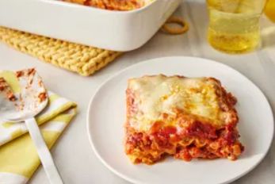

Home
Lasagna

Ingredients
- 9 lasagna noodles
- 1 pound ground beef
- 2 cups ricotta cheese
- 2 cups shredded mozzarella cheese
- 1 cup grated Parmesan cheese
- 2 cups marinara sauce
- 1 egg
- 1 teaspoon dried oregano
- Salt and pepper to taste
- Fresh basil for garnish
Instructions
- Preheat oven to 375°F (190°C).
- Cook lasagna noodles according to package instructions; drain and set aside.
- In a skillet, brown the ground beef over medium heat; drain excess fat.
- In a bowl, mix ricotta cheese, egg, oregano, salt, and pepper.
- Spread a layer of marinara sauce on the bottom of a baking dish.
- Layer 3 noodles, half of the ricotta mixture, half of the ground beef, and a third of the mozzarella cheese.
- Repeat layers, finishing with noodles topped with marinara sauce and remaining mozzarella and Parmesan cheese.
- Bake for 30-35 minutes until cheese is bubbly and golden.
- Let it cool for 10 minutes before serving. Garnish with fresh basil.
Notes
Feel free to add vegetables like spinach or mushrooms for extra flavor and nutrition.
Tips
- Use no-boil lasagna noodles to save time.
- Make it ahead and refrigerate overnight; just add a few extra minutes to the baking time.
- Pair with a side salad and garlic bread for a complete meal.
Variations
- Vegetarian Lasagna: Substitute ground beef with sautéed vegetables like zucchini, bell peppers, and mushrooms.
- White Lasagna: Use a white sauce (béchamel) instead of marinara sauce and add spinach for a creamy texture.
- Mexican Lasagna: Layer with refried beans, salsa, and Mexican cheese blend for a spicy twist.
Serving Suggestions
Serve with a side of garlic bread and a fresh garden salad. A glass of red wine pairs wonderfully with this dish.
Storage Instructions
Store leftovers in an airtight container in the refrigerator for up to 3 days. Reheat in the oven or microwave before serving.
Frequently Asked Questions
Can I freeze lasagna?
Yes, lasagna freezes well. Assemble it in a freezer-safe dish, cover tightly, and freeze for up to 3 months. Thaw in the refrigerator overnight before baking.
How do I prevent lasagna from being watery?
Ensure to drain excess liquid from the meat and vegetables. Using less sauce and allowing the lasagna to rest after baking helps absorb excess moisture.
Can I use store-bought sauce?
Absolutely! Store-bought marinara sauce is a great time-saver. Just choose a quality brand for the best flavor.
Nutrition Information
Per serving (1 slice): Approximately 350 calories, 20g protein, 25g carbohydrates, 15g fat. Nutritional values may vary based on specific ingredients used.
Related Recipes